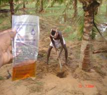

| Home |
| COCONUT |
| 1. Rhinoceros beetle |
| 2. Red palm weevil |
| 3. Black headed caterpillar |
| 4. Coconut Eriophyid mite |
| 5. White grub |
| 6. Slug caterpillar |
| 7. Mealy bug |
| 8. Scale Insect |
| 9. Lacewing bug |
| 10. Termite |
| 11. Coconut Skippers |
| Questions |
| Download Notes |
4. Coconut Eriophyid mite: Aceria guerreronis (Eriophyidae : Acari)
Distribution and status
Tamil Nadu, Karnataka and Andhra pradesh. Recently, observed in Andaman and Lakshadweep Islands. Dispersal of mite also occurs through insects, birds, lizards, squirrels and coconut husk. It attained major pest status after the super cyclone in 1998
 |
Bionomics
|
Damage symptoms
The mite infests and develops on the meristematic tissues under the perianth. Initial symptoms exhibit as triangular pale white or yellow patches close to the perianth. Continuous feeding results in necrosis of tissues leading to formation of brown color patches, longitudinal fissures and splits on the outer surface of the husk; oozing of brown gummy exudation; reduced nut size, copra content and malformation of nuts.
| Click to View Video |
Management
i. Nutrients (per tree / year)
Urea 1.3 kg, super 2.0 kg, potash 3.5 kg, neem cake 5 kg, borax 50 g, gypsum 1 kg, MgSO4 500 g, FYM 50 kg
ii. Root feeding
- Root feeding with TNAU - Agro Biocide 30 ml/tree
- Root feeding with carbosulfan 15 ml + 15 ml water / tree at 45 days interval or fenpyroximate at 10 ml/tree
- TNAU - Agro biocide - 30 ml/tree - (60 days after Carbosulfan root feeding).
Note: Before root feeding, pluck nuts. After root feeding, next harvest should be done 45 days later.
|  |
iii. Spray - Fenpyroximate 5 EC 1.0 ml/L of water - Click to View Video